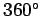
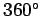
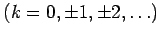

Inhalt Index DeskTop Bronstein

 Funktionen und ihre Darstellung Trigonometrische Funktionen (Winkelfunktionen) Grundlagen Wertebereiche und Funktionsverläufe der trigonometrischen Funktionen
Funktionen und ihre Darstellung Trigonometrische Funktionen (Winkelfunktionen) Grundlagen Wertebereiche und Funktionsverläufe der trigonometrischen Funktionen


Die sechs trigonometrischen Funktionen sind in der folgenden Abbildung in allen vier Quadranten für einen vollen Winkelbereich von  bis  bzw. einen vollen Bogenbereich von 0 bis
bis  bzw. einen vollen Bogenbereich von 0 bis  gemeinsam dargestellt.
gemeinsam dargestellt.
In der folgenden Tabelle ist ein Überblick über die Definitions- und Wertebereiche der trigonometrischen Funktionen gegeben. Das Funktionsvorzeichen, das vom Quadranten abhängt, in dem das Funktionsargument liegt, kann aus der zweiten Tabelle entnommen werden.
| Wertebereich | Definitionsbereich | Wertebereich | Definitionsbereich |
 |